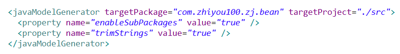

原文连接:https://www.cnblogs.com/syhl/p/11440037.html
Maybatis是作为封装持久层的半orm（对象关系映射）的框架，是让程序员将精力更多的放入在sql语句中
一、导入jar包
log4j：为运行日志jar包
mybatis jar包
链接数据库的mysqljar包
二、配置xml文件
使用xml文件主要是可以更好的能够进行对此进行扩容和修改，只需要对xml的文件进行配置和修改，不需要进行对源码的修改，减少了代码的耦合性，大大减少了工作的扩容和修改的难度。
1、配置mybatis的全局配置文件
主要配置链接数据库的数据，以及属性的设置，引入mapper xml文件
dtd是引入mybatis的约束
此标签是为了引入数据库信息
environments标签内主要配置的是数据库信息
mapper标签是引入每个表的mapper信息
2、配置mapper xml文件
一般一个表对应一个mapper xml文件，一个dao类，一个pojo；mapper xml文件主要是进行sql语句的增删改查，以及对输入，输出值的映射。
dtd是引入mapper的约束
namespace是命名空间，作用是将sql语句进行空间隔离
mapper中写入增删改查的标签
三、增删改查
在mapper的xml文件中配置增删改查标签，并写入相应的sql语句
使用select标签，id标识这个标签，作用是进行调用的标识;
parameterType 是输入的类型：
当是基本数据类型时且只有一个时，占位符的接收名可以时任意名字；
如果是基本数据类型时且多个时，占位符的接收名要与传入参数的名字进行对用，但xml进行解析式进行键值对的形式进行解析，有两种方式解决方法 1、将占位符的接收名命名成系统默认的名字paramet1 .。。。2、使用@Param("") 给基本数据类型命名，或者是非键值对的形式进行命名
引用 类型时，需要占位符的接收名与传参的Java的属性值名称一致
resultType是输出映射类型
查询的结果需要进行类型的确认，基本类型和引用类型，引用类型需要返回的字段类型与字段一致
查询用*号降低数据库的性能，如此需要进行字段名查询，但是字段名的过于冗长，可以进行拼接
sql里进行字段名的定义
在查询字段名时进include标签 ，根据id的引入字段名
增删改没有返回值，其他与查找类似
四、测试
1、加载config全局配置文件
2、生成sqlsesionfactory
3、由sqlsesion工厂生成sqlsesion
4、由sqlsesion进行操作数据库，调用sql语句，（传入参数namespace.id名）
5、如果是对数据库的数据进行改变的操作，需要进行确认的操作。
注意：在修改数据库时，在mybatis的事务是进行手动提交的，只有在提交事件的以上全部执行成功才会进行事务提交，并数据进行改变，如此是为了避免在同一关联事件中，只执行其中的一个事件，其他事件失败，数据出现的不准确事件，例：在转账的事件中，转账者的钱减少，接受者的钱增加，只有两个同时成功，数据库的才会确认改变，只有一个成功，则不进行提交
五、数据库与Java属性的数据不同处理
数据库的命名习惯会出现许多的下划线等命名，在Java中的属性名的命名习惯中不会出现这种命名方式，Java的属性命名习惯是驼峰命名法：第一个单词小写，第二个单词开始首字母大写，；例：userId；如此在进行输入输出映射时会出现无法将值正确的引入到Java属性值中，或者Java的属性值无法将赋给需要查询的条件，出现了parameterMap与resultMap，两个方法类似，我们只说resultMap部分。
在标签中定义时，不需要使用resultType，而是使用属性resultMap，其中的值是对应标签resultMap的id，属性type是需要封装数据的全类名，在标签内填写子标签，id标签为主键的标签，column为对应的数据库列名。property对应的是Java的属性名，就是将列名数据封装到属性名中，result标签是除了主键列的其他列，其中属性的作用与id的属性一致
六、多对一或者一对一
在对数据库的数据查询时经常会出现多张表的连表查询，会出现1对1或者多对一时，需要在pojo类中进行属性封装，因为对一，所以是进行另一条数据的封装，对应的是另一张表的pojo类，如此就是定义一个改对象类型并生成set，get方法
两种查询 方式：
1、连表查询
进行sql语句的连表查询，返回类型的属性一定为resultMap，进行映射，其他列进行映射与其类似，在进行对象映射时，而封装对象的映射标签是association，其中property属性是指的是Java封装的对象名，JavaType是此对象的全类名，
标签的子标签的，id与result都是进行列名与属性的映射
2、嵌套查询
进行分步查询，先进行条件查询，查询结果作为第二个的查询的条件，返回类型的属性一定为resultMap，进行映射，其他列进行映射与其类似，在进行对象映射时，而封装对象的映射标签是association，其中property属性是指的是Java封装的对象名，JavaType是此对象的全类名，column为此次查询的条件列，属性select的属性是要调用查询语句
七、一对多，多对多
在进行数据库查询，会出现先多对多或者一对多时，进行属性封装，需要对多个值或者对象进行封装，需要进行集合的定义。
两种查询 方式：
1、连表查询
与1对1相似，主要是对封装集合的映射，resultmap标签定义collection标签，property定义的Java属性名，ofType属性泛型类全路径，标签的子标签的，id与result都是进行列名与属性的映射。
2、嵌套查询
与1对1相似，在collection标签属性column为此次查询的条件列，属性select的属性是要调用查询语句
八、基于接口开发
mybatis的基于接口开发是实现了接口中的方法，所以需要遵守一些实现规则
1、接口名的全路径要与namespace的全路径一致
2、定义的增删改查的id要与接口的方法名一致
3、定义的返回类型要与mapper的结果类型一致
4、传值类型要与输入类型一致，一般输入类型可以省略，系统可以直接进行传值的解析
在测试时，sqlsession直接调用getmapper方法得到接口的对象，然后由对象进行用方法。
九、动态sql语句
1、if语句
if标签属性中testt的放入条件判断语句，如果为true执行
2、where+if语句
where标签里放入if语句，做用是将首个and或者or进行替换成where，if语句的作用是作为i判断条件语句是否执行
3、set+if语句
set标签里放入if语句，作用是将最后的语句的“,”进行删除，if语句的作用是作为i判断条件语句是否执行
4、choose（when+otherwise）语句
此语句是作为单选的结果，类似Java的if+else if+else 在choose标签中从上往下执行，执行到条件为true时，执行完成，跳出，不执行下边的语句。
5、trim语句
此语句的功能是可以在开始或者结束时的位置进行增加指定字段，也可以将字段的开始或者最后的字段进行删除
属性：prefix是在语句开始的开头进行添加
suffix是在语句的结尾进行添加
suffixOverrides结尾删除某个字段
prefixOverrides开头删除某个字段
注意：在trim替换set或者where时，如果不传入条件会出现报错
6、sql片段在查询时就交代过，在此不在赘述
7、foreach语句，一般是在一个列名查询，且进行多个时，
foreach标签中 collection对应的接收的集合名，遍历哪个对象的
open属性是此遍历开始的需要加入的字段
separator：遍历后值与值之间的字段
close：遍历完成后的添加的字段
十、mybatis generator（mybatis的逆向工程）
因为pojo，接口，mapper都是基于数据库中的表格进行创建的，所以只要根据数据库，就可以创建出这三种类型，也是是为了简化程序员创建pojo类、接口、以及mapper
1、导入jar包
2、引入xml配置文件
引入约束文件
配置数据库相关信息

配置pojo类的地址
配置mapper xml文件的地址
配置接口的地址
表信息
schema：数据库名
tableName：表名
domainObjectName：pojo类名
是将复杂的sql语句以及方法不生成
是生成Java属性名进行驼峰命名方式
<commentGenerator>
<property name =“suppressAllComments”value =“true”/>
</ commentGenerator>禁制生成注释
注意：在进行表格命名时尽量不要使用user命名
在进行禁制生成注释时，如果其他数据库有此表名，生成的mapper.xml文件中会生成此数据库的xml文件，会出现xml文件生成多个重复信息
在测试类中执行，生成pojo类，mapper，接口
十一、分页插件（pagehelper）
1、引入jar包
注意：jar包的版本的不同会出现版本冲突
2、xml文件配置
在mybatis的文件配置，引入配置，进行拦截
interceptor：为包中的核心类的位置
引入位置要在environments之上
在测试类中直接调用PageHelper类的静态方法startPage，参数是当前页码，显示条数
将查询结果直接放入Pageinfo的构造方法中；

十二、其他
$与#区别
$相当于Statement，进行sql语句拼接，传参不进行任何修饰，需要进行引号进行修饰，会产生sql注入，一般不适用，但在写入列名时需要使用此占位符
#相当于PreparedStatement，进行占位符的，传参进行后不需要对占位符进行任何修饰，可以避免sql注入